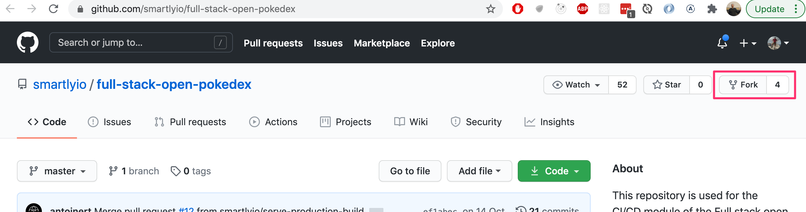
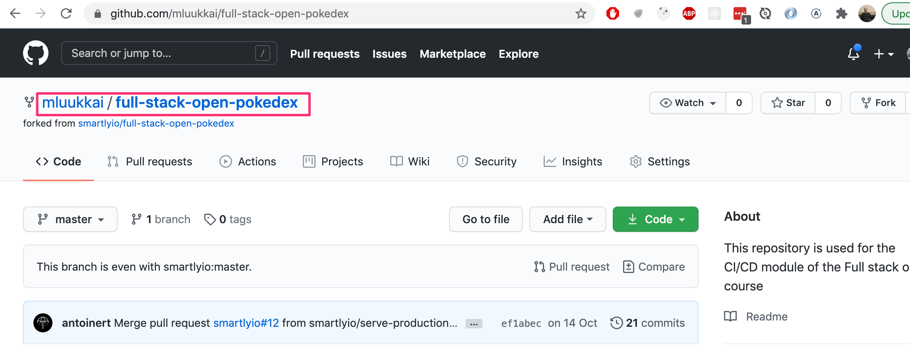
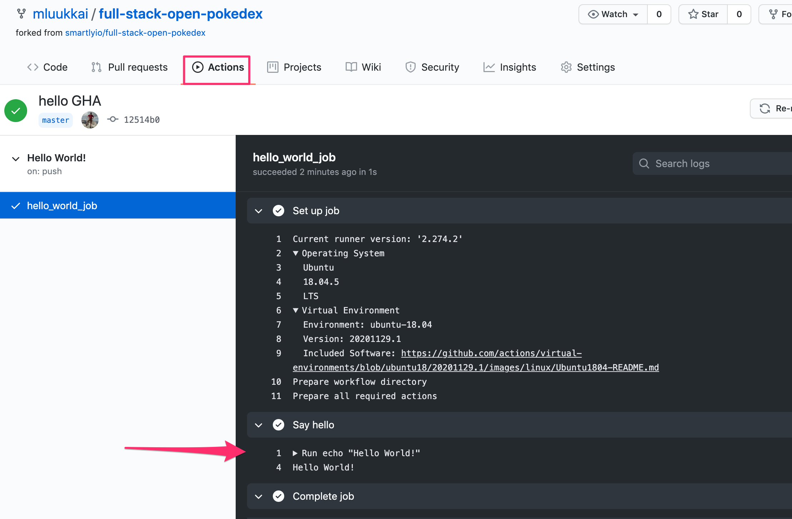
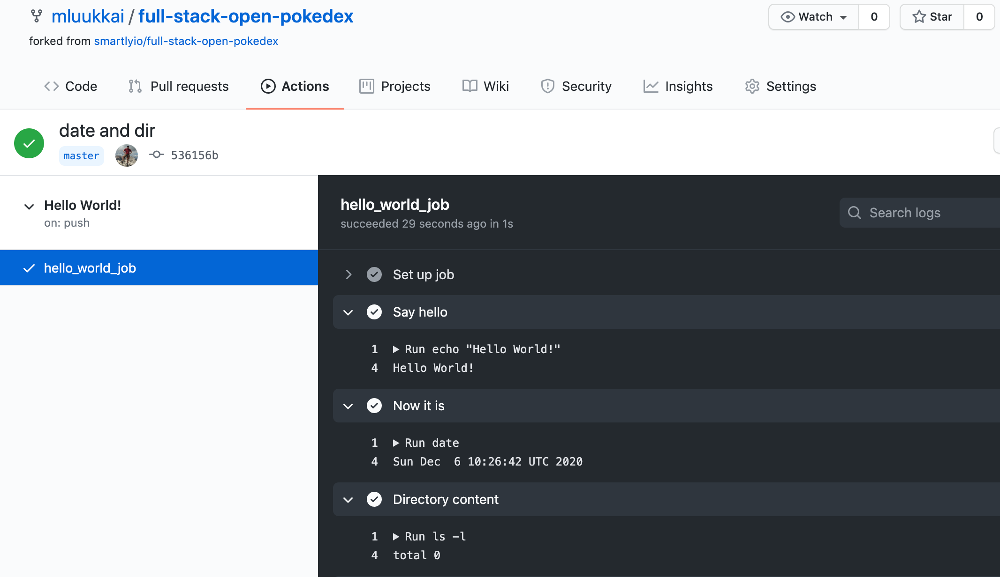
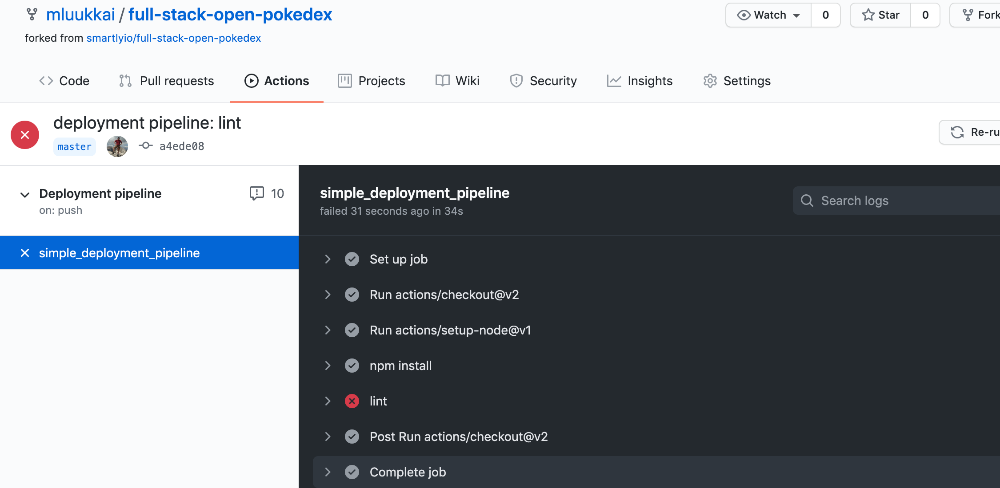
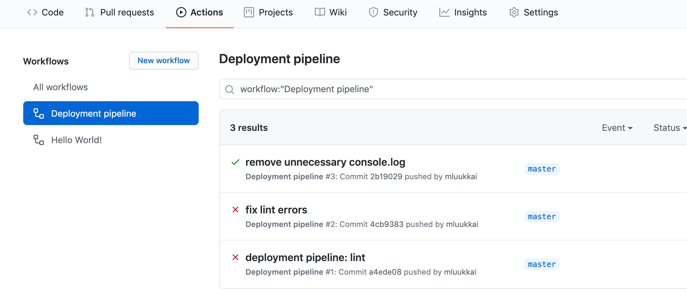
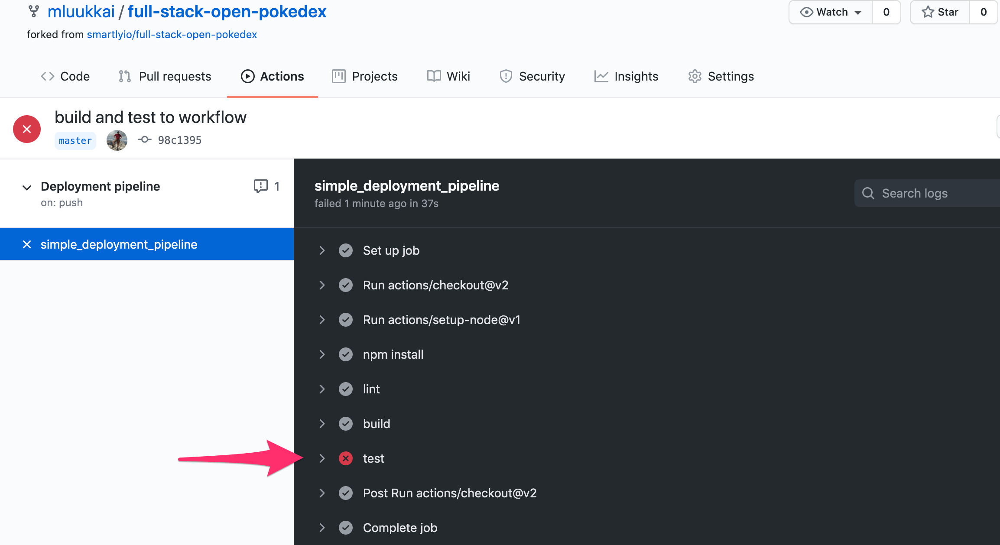
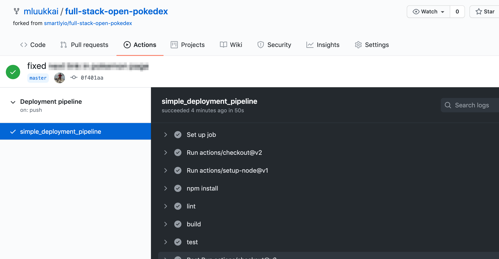
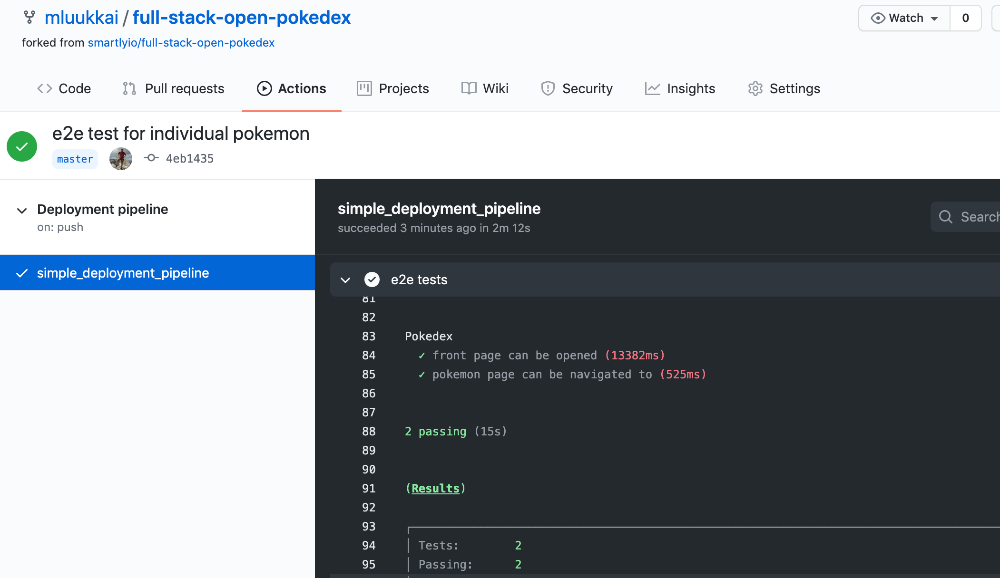

在我们开始玩GitHub动作之前，让我们先看看它们是什么，它们是如何工作的。
GitHub 动作的工作基础是 工作流。工作流程是一系列的工作，当某个触发的事件发生时就会运行。运行的作业本身就包含了GitHub Actions应该做什么的指令。
一个典型的工作流程的执行是这样的。
Basic needs
一般来说，要让 CI 在一个版本库上运行，我们需要一些东西。
这可以是版本库中特定文件的形式，也可以是CI系统中的定义。
例如，如果 CI 需要能够部署到生产环境，它需要该环境的证书。
这至少是传统的模式，我们将在一分钟内看到GitHub Actions如何绕过其中的一些步骤，或者说让你不必担心这些问题
与自我托管的解决方案相比，GitHub Actions 有一个很大的优势：仓库由 CI 供应商托管。换句话说，Github同时提供仓库和CI平台。这意味着，如果我们为一个仓库启用了行动，GitHub已经知道我们定义了工作流程，以及这些定义是什么样子的。
Exercise 11.2.
在这部分的大部分练习中，我们正在为这个例子的项目库中的一个小项目建立一个CI/CD管道。
11.2 The example project
你要做的第一件事是用你的名字分叉这个例子库。它的作用是在你的 GitHub 用户配置文件下创建一个仓库的副本供你使用。
要分叉该版本库，你可以点击版本库视图右上角明星按钮旁边的分叉按钮。

一旦你点击了分叉按钮，GitHub就会开始创建一个新的仓库，名为{github_username}/full-stack-open-pokedex。
一旦这个过程完成，你应该被重定向到你的全新仓库。

现在克隆项目到你的机器上。像往常一样，当开始使用一个新的代码时，最明显的地方就是package.json文件。
现在尝试以下操作。
你可能会注意到该项目包含一些破碎的测试和刷新错误。**我们将在后面的练习中解决这些问题。
你可能还记得第三章节，React代码不应该在开发模式下运行，一旦它被部署到生产中。现在试试下面的方法
同样对于这两项任务，项目中也有现成的npm脚本!
研究一下这个项目的结构。正如你所注意到的，前端和后端代码现在都在同一个仓库。在课程的早期部分，我们为二者建立了单独的仓库，但在建立CI环境时，将它们放在同一个仓库里会使事情变得更简单。
与本课程中的大多数项目相反，前端代码没有使用create-react-app，但它有一个相对简单的webpack配置，负责创建开发环境和创建生产包。
Getting started with workflows
使用GitHub Actions创建CI/CD管道的核心组件是一个叫做工作流的东西。工作流是你可以在你的版本库中设置的流程，以运行自动化任务，如构建、测试、刷新、发布和部署，仅举几个例子工作流的层次结构看起来如下。
工作流
每个工作流必须指定至少一个作业，其中包含一组步骤来执行单个任务。作业将被并行运行，每个作业中的步骤将被按顺序执行。
步骤可以从运行自定义命令到使用预先定义的行动，因此被称为GitHub行动。你可以创建自定义动作或使用社区发布的任何动作，这些动作很多，但让我们稍后再来讨论这个问题!
为了让GitHub识别你的工作流，它们必须被指定在你的仓库的.github/workflows文件夹中。每个工作流都是它自己的独立文件，需要使用YAML数据序列化语言进行配置。
YAML是 "YAML Ain't Markup Language "的递归首字母缩写。正如它的名字所暗示的那样，它的目标是人类可读的，它通常被用于配置文件。你会注意到下面的内容，它确实非常容易理解!
注意，缩进在YAML中是很重要的。你可以了解更多关于语法的信息这里。
在YAML文档中，一个基本的工作流程包含三个元素。这三个元素是
- 工作。工作流将执行的独立作业（一个基本的工作流可能只包含一个作业）。
一个简单的工作流定义如下所示：
name: Hello World!
on:
push:
branches:
- master
jobs:
hello_world_job:
runs-on: ubuntu-latest
steps:
- name: Say hello
run: |
echo "Hello World!"
在这个例子中，触发器是推送到主分支，在我们的项目中被称为master。(你的主分支可以叫main或master)。 有一个名为hello_world/job的工作，它将在Ubuntu 20.04的虚拟环境中运行。这个作业只有一个步骤，名为 "Say hello"，它将在shell中运行echo "Hello World!"命令。
所以你可能会问，GitHub什么时候会触发工作流的启动？有很多选项可以选择，但一般来说，你可以将工作流配置为启动一次。
- GitHub上的一个事件发生，比如有人向仓库推送了一个提交，或者创建了一个问题或拉动请求
要了解更多关于哪些事件可以用来触发工作流程，请参考GitHub Action的文档。
Exercises 11.3-11.4.
为了将这一切联系起来，现在让我们在示例项目中启动并运行Github Action!
11.3 Hello world!
创建一个新的工作流，向用户输出 "Hello World！"。对于设置，你应该创建目录.github/workflows和一个文件hello.yml到你的仓库。
要看你的GitHub行动工作流程做了什么，你可以导航到GitHub中的行动标签，在那里你应该看到你的仓库中的工作流程和它们实现的步骤。如果工作流程配置得当，"你好，世界 "工作流程的输出应该是这样的。

你应该看到 "Hello World!"信息作为输出。如果是这样的话，那么你已经成功地完成了所有必要的步骤。你的第一个GitHub Actions工作流已经激活了!
注意，GitHub Actions 还会告诉你工作流运行的具体环境（操作系统和它的 setup）是什么。这很重要，因为如果发生了令人惊讶的事情，如果你能在你的机器上重现所有的步骤，那么调试就会容易得多
11.4 Date and directory contents
用长格式打印日期和当前目录内容的步骤来扩展工作流程。
这两个步骤都很简单，只要运行命令date和ls就可以了。
你的工作流程现在应该是这样的

正如命令ls -l的输出显示，默认情况下，运行我们工作流程的虚拟环境没有任何代码!
Setting up lint, test and build steps
在完成第一个练习后，你应该有一个简单但相当无用的工作流设置。让我们来让我们的工作流做一些有用的事情。
让我们实现一个Github动作，对代码进行检查。如果检查没有通过，Github行动将显示红色状态。
开始时，我们将保存在文件pipeline.yml中的工作流程是这样的。
name: Deployment pipeline
on:
push:
branches:
- master
jobs:
在我们运行命令对代码进行润色之前，我们必须执行几个动作来设置工作的环境。
Setting up the environment
设置环境是配置管道时的一项重要任务。我们将使用一个ubuntu-latest虚拟环境，因为这是我们将在生产中运行的Ubuntu版本。
在CI中尽可能地复制与生产中相同的环境是很重要的，以避免相同的代码在CI和生产中工作不同的情况，这将有效地挫败使用CI的目的。
接下来，我们列出CI需要执行的 "构建 "工作中的步骤。正如我们在上一个练习中注意到的，默认情况下，虚拟环境中没有任何代码，所以我们需要从仓库中签出代码。
这是一个简单的步骤。
name: Deployment pipeline
on:
push:
branches:
- master
jobs:
simple_deployment_pipeline: // highlight-line
runs-on: ubuntu-latest // highlight-line
steps: // highlight-line
- uses: actions/checkout@v4 // highlight-line
uses关键词告诉工作流要运行一个特定的动作。行动是一段可重复使用的代码，就像一个函数。行动可以在你的版本库中定义为一个单独的文件，也可以使用公共版本库中的行动。
这里我们使用一个公共动作actions/checkout，我们指定了一个版本(@v4)，以避免在动作被更新时可能出现的破坏性变化。checkout动作就像它的名字所暗示的那样：它从git检查项目的源代码。
其次，由于应用是用JavaScript编写的，Node.js必须被设置为能够利用package.json中指定的命令。要设置Node.js，可以使用actions/setup-node 动作。版本16被选中，因为它是应用在生产环境中使用的版本。
# name and trigger not shown anymore...
jobs:
simple_deployment_pipeline:
runs-on: ubuntu-latest
steps:
- uses: actions/checkout@v4
- uses: actions/setup-node@v4 // highlight-line
with: // highlight-line
node-version: '20' // highlight-line
我们可以看到，with关键字被用来给动作提供一个 "参数"。这里的参数指定了我们要使用的Node.js的版本。
最后，必须安装应用的依赖项。就像在你自己的机器上，我们执行npm install。工作中的步骤现在看起来应该是这样的
jobs:
simple_deployment_pipeline:
runs-on: ubuntu-latest
steps:
- uses: actions/checkout@v4
- uses: actions/setup-node@v2
with:
node-version: '20'
- name: npm install // highlight-line
run: npm install // highlight-line
现在环境应该完全准备好了，以便作业在其中运行实际的重要任务!
Lint
环境建立后，我们可以像在自己的机器上一样，运行package.json中所有的脚本。要对代码进行检查，你所要做的就是添加一个步骤来运行npm run eslint命令。
jobs:
simple_deployment_pipeline:
runs-on: ubuntu-latest
steps:
- uses: actions/checkout@v4
- uses: actions/setup-node@v2
with:
node-version: '20'
- name: npm install
run: npm install
- name: lint // highlight-line
run: npm run eslint // highlight-line
Exercises 11.5.-11.9.
11.5 Linting workflow
执行或复制-粘贴"Lint "工作流程，并将其提交到版本库中。为这个工作流程使用一个新的yml文件，你可以称它为例如pipeline.yml。
推送你的代码，并导航到 "行动 "选项卡，在左边点击你新创建的工作流。你应该看到工作流运行失败了。

11.6 Fix the code
代码中存在一些问题，你需要加以解决。打开工作流程的日志，调查一下哪里出了问题。
有几个提示。其中一个错误最好通过为linting指定适当的env来解决，见这里如何做。关于console.log语句的投诉之一，可以通过简单地沉默该特定行的规则来解决。问问google怎么做吧。
对源代码进行必要的修改，使lint工作流通过。一旦你提交了新的代码，工作流就会再次运行，你会看到更新的输出，所有的东西都是绿色的。

11.7 Building and testing
让我们在之前的工作流程上进行扩展，该工作流程目前正在对代码进行刷新。编辑工作流程，并在lint命令的基础上增加build和test的命令。这一步之后，结果应该是这样的

正如你可能已经猜到的，代码中存在一些问题...
11.8 Back to green
调查哪个测试失败了，在代码中修复这个问题（不要改变测试）。
一旦你修复了所有的问题，并且Pokedex没有错误，工作流程的运行就会成功，并且显示为绿色!

11.9 Simple end to end -tests
目前的测试集使用Jest来确保React组件按预期工作。这与第5章节的Testing React apps所做的事情完全一样。
孤立地测试组件是相当有用的，但这仍然不能确保系统作为一个整体按照我们的意愿工作。为了对此更有信心，让我们用Cypress库写几个真正简单的端到端测试，就像我们在第五章节的端到端测试中做的那样。
所以，设置Cypress（你会发现这里你需要的所有信息）并首先使用这个测试。
describe('Pokedex', function() {
it('front page can be opened', function() {
cy.visit('http://localhost:5000')
cy.contains('ivysaur')
cy.contains('Pokémon and Pokémon character names are trademarks of Nintendo.')
})
})
定义一个npm脚本 test:e2e 用于从命令行运行e2e测试。
注意不要在Cypress测试文件名中包含spec这个词，那样也会导致Jest运行它，而且可能会引起问题。
另一件需要注意的事情是尽管页面上渲染的小精灵名字是以大写字母开始的，但实际上在源文件中这些名字是以小写字母书写的，所以是ivysaur而不是Ivysaur!
确保测试在本地通过。请记住，Cypress测试_假设当你运行测试时，应用已经启动并运行了_!如果你忘记了细节（我也遇到过这种情况！），请看第5章节如何使用Cypress启动和运行。
一旦端到端测试在你的机器上运行，将其纳入GitHub行动工作流程。到目前为止，最简单的方法是使用现成的行动cypress-io/github-action。适合我们的步骤如下。
- name: e2e tests
uses: cypress-io/github-action@v2
with:
command: npm run test:e2e
start: npm run start-prod
wait-on: http://localhost:5000
使用了三个选项。command指定如何运行Cypress测试。start给出了启动服务器的npm脚本，wait-on表示在运行测试之前，服务器应该已经在url http://localhost:5000中启动。
一旦你确定管道工作，写另一个测试，确保人们可以从主页面导航到一个特定的小精灵的页面，例如ivysaur。这个测试不需要很复杂，只需检查当你浏览一个链接时，该页面有一些正确的内容，例如在ivysaur的情况下，字符串chlorophyll。
注意口袋妖怪的能力也是用小写字母写的，大写字母是在CSS中完成的，所以不要搜索例如Chlorophyll，而是chlorophyll。
注意2，你不应该尝试bulbasaur，由于某些原因，该特定小精灵的页面不能正常工作......
最后的结果应该是这样的

端到端测试是很好的，因为它们从最终用户的角度给了我们软件工作的信心。我们必须付出的代价是较慢的反馈时间。现在执行整个工作流程需要相当长的时间。